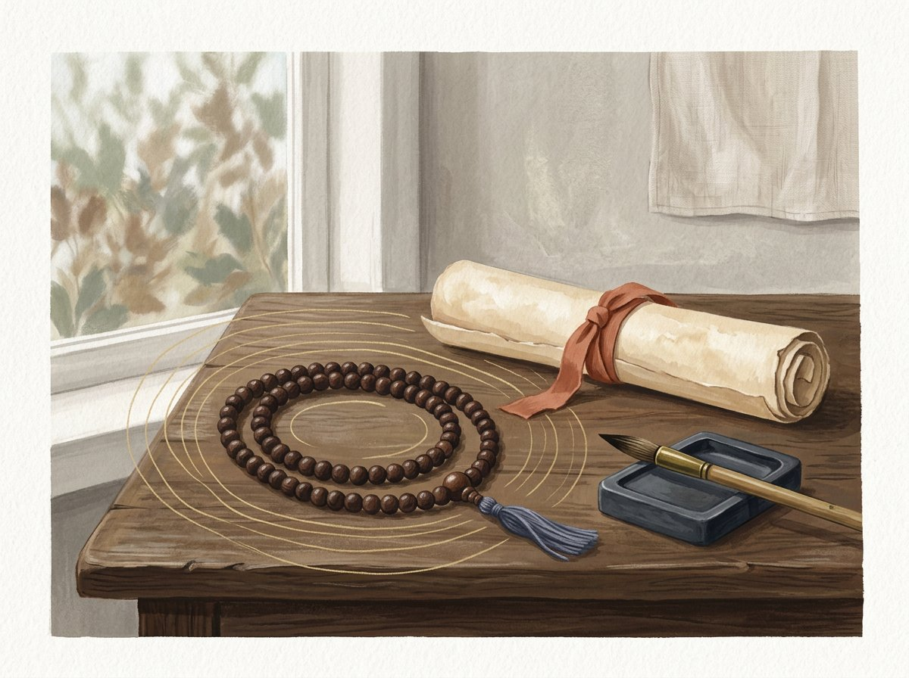

Om mani padme hum
Das sechssilbige Mantra ist im tibetischen Buddhismus besonders mit Avalokiteshvara (Chenrezig), dem Bodhisattva des Mitgefühls, verbunden.
KLANG · VERGEGENWÄRTIGUNG · PRAXIS
Ein Mantra ist eine heilige Formel, die in religiöser Praxis laut oder im Geist wiederholt wird. Aussprache, Erklärung und Übungsweise hängen von einer bestimmten buddhistischen Tradition und Übertragung ab.

WAS IST EIN MANTRA?
Ein Mantra kann eine kurze Formel oder ein längerer Text sein. Die Wiederholung kann die Aufmerksamkeit sammeln, Hingabe ausdrücken oder an die Eigenschaften eines Buddhas oder Bodhisattvas erinnern. Nicht jedes Mantra hat eine wörtliche Übersetzung, die alle Schulen teilen; auch Klang, Ritualkontext und mündliche Übertragung sind wichtig.
Manche zählen die Rezitationen mit einer Mala. Andere Praktiken verbinden das Mantra mit Visualisierung, Gebet oder Widmung. Keine einzelne Form sollte als einzig richtige für alle Buddhisten gelten.
DREI BEKANNTE BEISPIELE
Hier stehen bekannte Formeln in verbreiteter Umschrift. Die Schreibweise kann in Sanskrit-, tibetischen und anderen Sprachübertragungen variieren; bei Unterweisung in einer bestimmten Linie gilt die dort gelehrte Form.
KONTEXT IST WICHTIGER ALS MECHANISCHES ZÄHLEN
Ein Mantra garantiert weder die Erfüllung eines Wunsches noch ist es eine medizinische Behandlung. Die Rezitation kann mit einer guten Absicht, Achtsamkeit für das eigene Handeln und Fürsorge verbunden werden. Manche tantrischen Praktiken setzen vorherige Anleitung oder Übertragung voraus; die Anforderungen unterscheiden sich.
BEISPIELE UND KONTEXT
Das sechssilbige Mantra ist im tibetischen Buddhismus besonders mit Avalokiteshvara (Chenrezig), dem Bodhisattva des Mitgefühls, verbunden.
Die Formel „Om tare tuttare ture svaha“ gehört zur Tara-Praxis; die Rezitationsform richtet sich nach der Übertragungslinie.
Eine Formel, die mit dem Buddha Bhaisajyaguru verbunden ist. In der buddhistischen Praxis wird sie als Gebet und Aufmerksamkeitsstütze rezitiert; sie ersetzt keine medizinische Versorgung.